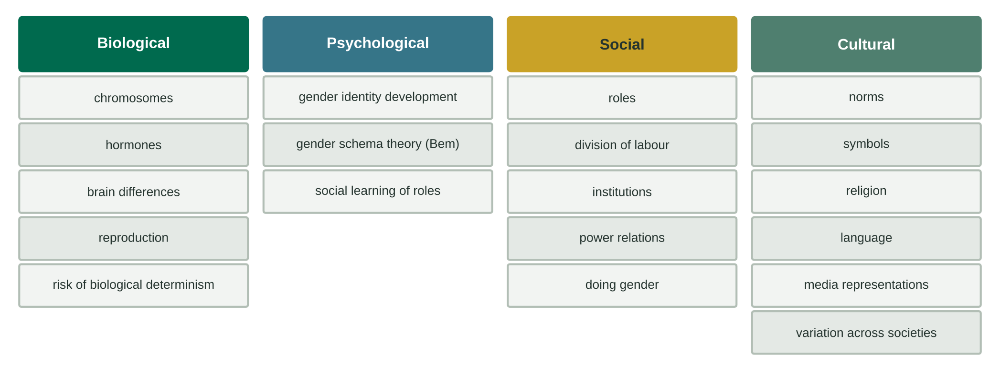
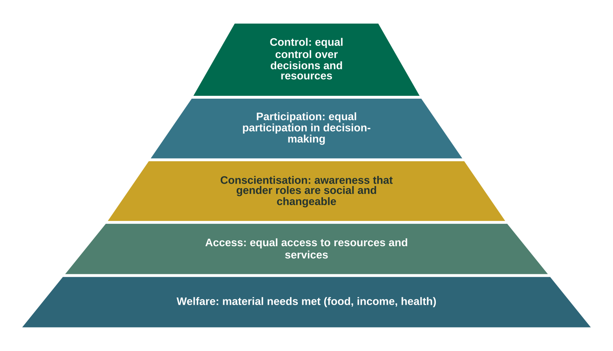
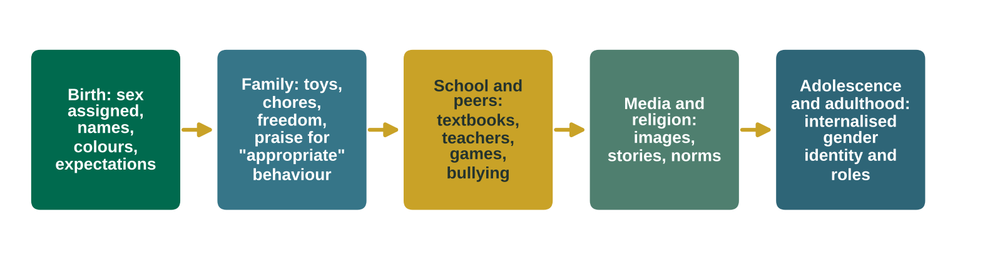
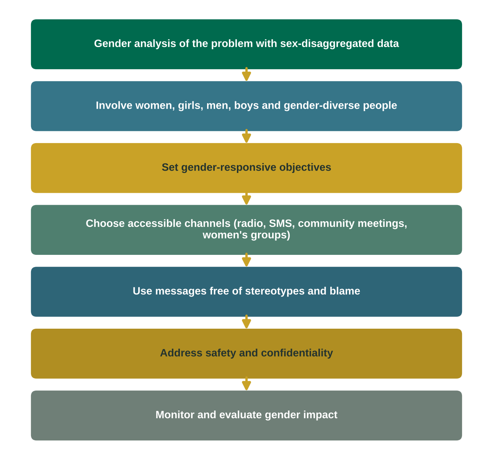

PC 122 Gender Education
Gender concepts, socialisation, socio-cultural, political, economic and legal dimensions, development frameworks and Bangladesh
Contents
- Unit 1: Introduction to Gender
- Unit 2: Gender Education: Concept and Vision
- Unit 3: Socio-Cultural Dimensions
- Unit 4: Political, Economic and Legal Dimensions
- Unit 5: Gender and Development
- Unit 6: Gender and Development in Bangladesh: Issues and Status
- Unit 7: Gender in Disaster, Emergency and Pandemic
- Reading List
- Exam Preparation Bank
- References
About this course
Gender education examines how societies construct differences between women, men and gender-diverse people, how these constructions create inequality, and how education can either reproduce or transform them. The course introduces key concepts (sex and gender, patriarchy, stereotypes, practical and strategic needs, equality and equity, empowerment, intersectionality); explores how gender is learned in families, schools and curricula; analyses socio-cultural, political, economic and legal dimensions, including gender-based violence; traces development approaches from WID to GAD and global commitments such as CEDAW and the SDGs; and reviews policies, issues and the situation of transgender people in Bangladesh, ending with gender in disasters, conflict and pandemics.
Course objectives
Explain the concepts of gender, sexuality and transgender and the major gender-related terminology.
Analyse the vision, scope and role of gender education, socialisation and the curriculum.
Examine socio-cultural, political, economic and legal dimensions of gender and the role of education.
Evaluate global and national gender and development frameworks, policies and practices, including in emergencies.
Each unit follows the official syllabus order. Read the narrative first, then the Key point boxes, then test yourself with the Exam focus questions.
Golden boxes = must-remember ideas. Teal boxes = definitions and study tips. Green boxes = Bangladesh context.
The final chapter is a question bank (MCQs with answers, short and broad questions) in the style of university examinations, followed by full references in APA 7th style.
Statistics on enrolment, budgets and policies change every year. Before an exam, check the latest BANBEIS, DPE, UGC and UNESCO figures.
Unit 1: Introduction to Gender
Chapter summary
Transgender describes people whose gender identity differs from the sex assigned at birth. In South Asia, hijra communities have a long cultural history as a recognised third gender.
This chapter covers: Understanding gender and sexuality; Transgender and the "other gender"; Biological, psychological, social and cultural interpretations; Women and gender: are they synonymous?; Major gender-related concepts; Stages of social change and man–woman relations.
What the curriculum saysUnit 1: Introduction to Gender · 6 contact hours
At the end of this unit learners will be able to
- explain the basic concepts related to gender
- analyze man-woman relationship in relation to different stages of social development
- Concept of Understanding gender and sexuality
- Concept of transgender, The Other Gender
- Biological, psychological, social and cultural interpretation of gender
- Women and gender; Are they synonymous?
- Gender related major concepts: Patriarchy, Gender role, Gender stereotype, Gender division of labor, Gender needs (both practical and strategic), Equality, Equity Awareness/sensitization, Empowerment and Gender development, Gender lens, Gender neutrality, Gender balanced
- Stages of social change and man-woman relations
1.1 Understanding gender and sexuality
Sex refers to the biological and physiological characteristics (chromosomes, hormones, reproductive organs) typically used to classify people as female, male or intersex.
Gender refers to the socially constructed roles, behaviours, expressions, identities and relations that a society considers appropriate for women, men and gender-diverse people. Ann Oakley's Sex, Gender and Society (1972) popularised the distinction.
Gender identity is a person's internal sense of their own gender; gender expression is how a person presents gender outwardly.
Sexuality / sexual orientation refers to a person's emotional, romantic and sexual attraction to others.
Simone de Beauvoir (1949): "One is not born, but rather becomes, a woman." Judith Butler (1990): gender is performative, produced through repeated acts. West and Zimmerman (1987): gender is something we "do" in everyday interaction.
| Sex | Gender |
|---|---|
| Biological | Social and cultural |
| Largely fixed at birth | Learned, varies across cultures and over time |
| Universal categories | Culture-specific roles and expectations |
| Example: only women can give birth | Example: the belief that only women should cook or care for children |
1.2 Transgender and the "other gender"
Transgender describes people whose gender identity differs from the sex assigned at birth. In South Asia, hijra communities have a long cultural history as a recognised third gender. In Bangladesh, the government recognised hijras as a third gender in 2013, and from 2019 voters could register as hijra. Other related terms: intersex (variations in sex characteristics), non-binary and gender-diverse. Transgender people face exclusion from education, employment, health care and housing, family rejection and violence.
1.3 Biological, psychological, social and cultural interpretations

Figure 1. Four interpretations of gender
Biological explanations emphasise physical differences but are criticised for biological determinism (the idea that biology fixes social roles).
Psychological explanations: Freud (identification), Kohlberg (cognitive-developmental gender constancy), Bandura (social learning by imitation and reinforcement), Bem's gender schema theory (1981; children organise information through gender categories).
Social explanations: gender is a structure of social relations and power (Connell, 2009), sustained by institutions (family, school, workplace, state).
Cultural explanations: Margaret Mead's Sex and Temperament (1935) found different gender patterns among the Arapesh, Mundugumor and Tchambuli of Papua New Guinea, showing that "masculine" and "feminine" traits are culturally shaped.
1.4 Women and gender: are they synonymous?
No. "Gender" is not a synonym for "women". Gender refers to relations between women, men and gender-diverse people, and to the structures of masculinity and femininity. Gender analysis therefore includes men and boys (e.g. pressures of "hegemonic masculinity"; Connell), sexual and gender minorities, and the relations of power between groups. Early development policy focused on "women" (WID); later approaches shifted to "gender" (GAD) because women's disadvantage cannot be understood without analysing relations with men and social structures.
1.5 Major gender-related concepts
| Concept | Meaning |
|---|---|
| Patriarchy | A social system in which men hold primary power and dominate in roles of leadership, authority and property; "a system of social structures and practices in which men dominate, oppress and exploit women" (Walby, 1990) |
| Gender role | Behaviours and responsibilities a society considers appropriate for each gender |
| Gender stereotype | Generalised, often inaccurate beliefs about the traits of each gender ("boys are better at mathematics", "girls are emotional") |
| Gender division of labour | Allocation of tasks by gender: Moser's triple roles of women: productive, reproductive and community management |
| Practical gender needs (PGNs) | Needs arising from women's existing roles that improve their condition without challenging the gender order: water, health care, income (Moser, 1993; Molyneux, 1985) |
| Strategic gender needs (SGNs) | Needs that challenge women's subordinate position: legal rights, protection from violence, equal wages, control over their bodies, political voice |
| Gender equality | Equal rights, responsibilities and opportunities for all genders |
| Gender equity | Fairness of treatment according to respective needs, which may require different treatment to achieve equality |
| Gender awareness / sensitisation | Recognising that gender shapes experience and that differences in power exist; training to become sensitive to gender issues |
| Empowerment | Expanding people's ability to make strategic life choices in a context where this ability was previously denied (Kabeer, 1999): resources, agency and achievements |
| Gender and development | Approaches to development that analyse and address gender relations (see Unit 5) |
| Gender lens | A way of looking at policies, programmes or data to see their different effects on women, men and gender-diverse people |
| Gender neutrality | Policies or language that do not distinguish by gender. "Gender-neutral" policies can be "gender-blind" if they ignore real differences in needs |
| Gender-balanced approach | Ensuring the representation and participation of all genders in decision-making, staffing and content |
| Gender audit | A systematic assessment of how far an organisation's policies, programmes, budget and culture promote gender equality (e.g. the ILO Participatory Gender Audit) |
| Intersectionality | Kimberlé Crenshaw (1989): systems of oppression (gender, race, class, caste, disability, religion, ethnicity) intersect, so a poor, disabled, ethnic minority girl faces compounded disadvantage |
")
Figure 2. Practical and strategic gender needs (Moser, 1993)

Figure 3. Equality versus equity
1.6 Stages of social change and man–woman relations
Sara Longwe's Women's Empowerment Framework (1991) describes five levels of equality, which can be read as stages of change in gender relations:

Figure 4. Longwe's Women's Empowerment Framework: levels of equality (highest at top)
Historically, societies have also moved from strongly patriarchal arrangements towards more egalitarian ones through stages such as formal legal equality (voting rights, education rights), substantive equality (equal outcomes and opportunities) and transformative equality (changing norms and structures).
Unit 2: Gender Education: Concept and Vision
Chapter summary
Gender education developed from women's studies (from the late 1960s, linked to second-wave feminism) and broadened into gender studies in the 1980s–90s to include men, masculinities and sexualities. In education, early work focused on girls' access to schooling; later work examined sexism in curricula, classroom interaction and the hidden curriculum (Spender, 1982; Sadker & Sadker…
This chapter covers: Origin and development of gender education; Importance, scope and objectives; Relations with other disciplines; Role of family, school and society; Socialisation and learning gender; Role of the curriculum and hidden curriculum; State education policies and gender; Diversity and gender-inclusive schools.
What the curriculum saysUnit 2: Gender Education: Concept and Vision · 6 contact hours
At the end of this unit learners will be able to
- explain the origin and development of gender education
- relate gender education with other disciplines
- analyze the role of curriculum and hidden curriculum in relation to gender education
- critically review state education policies in relation to gender
- Origin and development of gender education
- Importance, scope and objectives
- Relations with other disciplines
- Role of the family, school and society
- Socialization and learning genders
- Role of the curriculum and hidden curriculum
- State education policies and gender
- Diversity and gender inclusive school
2.1 Origin and development of gender education
Gender education developed from women's studies (from the late 1960s, linked to second-wave feminism) and broadened into gender studies in the 1980s–90s to include men, masculinities and sexualities. In education, early work focused on girls' access to schooling; later work examined sexism in curricula, classroom interaction and the hidden curriculum (Spender, 1982; Sadker & Sadker, 1994). International frameworks (CEDAW 1979, Beijing 1995, EFA 2000, SDGs 2015) made gender equality in and through education a global commitment. In Bangladesh, the University of Dhaka established a Department of Women's Studies in 2000 (now Women and Gender Studies).
2.2 Importance, scope and objectives
Gender education is education about gender and for gender equality: helping learners understand how gender is constructed, recognise inequality and discrimination, and develop attitudes and skills for respectful, equal relationships.
Objectives: raise awareness of gender constructions and stereotypes; promote equal opportunities and rights; prevent gender-based violence; develop critical thinking about media and culture; support all learners to achieve their potential; prepare gender-sensitive teachers and leaders.
Scope: curriculum, textbooks, pedagogy, classroom interaction, school environment and safety, teacher education, leadership, policy, community and media.
2.3 Relations with other disciplines
Sociology (social structures), psychology (identity, socialisation), anthropology (cultural variation), economics (labour, care work), political science (power, representation), law (rights), history (women's history), health sciences (reproductive health), development studies, and literature and media studies.
2.4 Role of family, school and society
Family: the first site of gender socialisation (toys, chores, freedom of movement, investment in education, inheritance).
School: formal and hidden curriculum; teacher expectations and interaction; separate or mixed schooling; school safety; role models among teachers and leaders.
Society: religion, media, peer groups, community norms, laws and the labour market.
2.5 Socialisation and learning gender

Figure 5. How gender is learned through socialisation
Mechanisms: manipulation and canalisation (Oakley: directing children towards gender-typed toys and activities), reinforcement (praise and punishment), modelling, verbal appellations ("good girl", "boys don't cry") and gender schemas.
2.6 Role of the curriculum and hidden curriculum
Formal curriculum: textbook content and images may under-represent women, show them only in domestic roles, or ignore women's contributions. Gender-responsive curricula include diverse role models, challenge stereotypes and include gender equality content.
Hidden curriculum: teachers giving boys more attention and harder questions; assigning cleaning to girls and lifting to boys; seating patterns; disciplinary practices; sexist jokes; and the gender composition of leadership (most head teachers are men while many primary teachers are women).
NCTB textbook reviews have sought to remove stereotypes; studies still find persistent imbalances (e.g. more male characters and stereotyped occupations).
2.7 State education policies and gender
NEP 2010 commits to gender equality, eliminating gender discrimination in textbooks, female teacher recruitment (a 60% quota for women in government primary teacher recruitment), stipends for girls, separate toilets and safe schools. PEDP and secondary programmes include gender action plans. The Female Secondary School Stipend Programme (from 1994) is an internationally cited success in achieving gender parity.
2.8 Diversity and gender-inclusive schools
A gender-inclusive school: ensures safety (anti-harassment committees, safe transport); provides gender-segregated and accessible toilets and menstrual hygiene management (MHM) facilities; uses inclusive language and materials; trains teachers in gender-responsive pedagogy (FAWE, 2005/2018); involves girls and boys equally in leadership and co-curricular activities; welcomes transgender and gender-diverse learners; and offers comprehensive, age-appropriate life skills and sexuality education.
Unit 3: Socio-Cultural Dimensions
Chapter summary
Values about modesty, honour, purdah and the "proper place" of women restrict mobility and participation. The gender division of labour assigns unpaid care and domestic work mainly to women (women do on average several times more unpaid care work than men), limiting time for education, paid work and public life.
This chapter covers: Marriage and family: patriarchy and matriarchy; Social values, social division of labour and participation; Social perspective of transgender people; Gender segregation and discrimination; Gender-based violence (GBV) and sexual harassment; Gender Management System (GMS) and the role of education.
Key terms:
- Gender-based violence : Harmful acts directed at an individual based on their gender, rooted in gender inequality, abuse of power and harmful norms; it includes physical, sexual, psychological and economic harm, and threats, coercion and deprivation of liberty (UNHCR; UN…
What the curriculum saysUnit 3: Socio-Cultural Dimensions · 6 contact hours
At the end of this unit learners will be able to
- critically analyze the socio-cultural dimensions of gender
- explain the situations of deprivations of gender in all aspects of life
- describe the nature of gender based violence and sexual harassment
- evaluate the role of Gender Management System (GMS) and education to overcoming the vulnerable situation
- Marriage and family: Patriarchy and Matriarchy
- Social values, social division of labor, and participation in social life
- Social perspective of transgender
- Gender segregation and discrimination in all aspects of life
- Gender based violence and sexual harassment: Family, workplace, peers, educational institutions, transport, cyber space and the role of media to instigate/ prevent violence/
- Gender Management System (GMS) Role of education in improving the situation
3.1 Marriage and family: patriarchy and matriarchy
Patriarchal families: authority with the father or eldest male; patrilineal descent and inheritance; patrilocal residence (the bride moves to the husband's home). This is dominant in Bangladesh.
Matriarchal / matrilineal families: descent and property traced through women; examples in Bangladesh include the Garo (Mandi) and Khasi communities, where property passes through daughters and husbands often live with the wife's family. (Matrilineal does not necessarily mean women hold political power.)
Issues: child marriage (Bangladesh has one of the highest rates in the world; about half of women aged 20–24 were married before 18 in recent MICS surveys), dowry, polygamy, divorce, inheritance, and women's decision-making power in households.
3.2 Social values, social division of labour and participation
Values about modesty, honour, purdah and the "proper place" of women restrict mobility and participation. The gender division of labour assigns unpaid care and domestic work mainly to women (women do on average several times more unpaid care work than men), limiting time for education, paid work and public life.
3.3 Social perspective of transgender people
Hijra communities in Bangladesh traditionally live in gharanas under a guru, earning through blessings at births and weddings and collecting money in markets. Despite legal recognition in 2013, they face stigma, family rejection, exclusion from education and work, violence and limited health care. Government and NGO programmes (stipends for hijra students, vocational training, employment quotas in some private firms) are steps forward, but social acceptance remains limited.
3.4 Gender segregation and discrimination
Discrimination appears across life: son preference and unequal nutrition, unequal schooling, restricted mobility, occupational segregation, wage gaps, unequal inheritance, under-representation in leadership, and stereotyped media portrayal.
3.5 Gender-based violence (GBV) and sexual harassment
Gender-based violence: Harmful acts directed at an individual based on their gender, rooted in gender inequality, abuse of power and harmful norms; it includes physical, sexual, psychological and economic harm, and threats, coercion and deprivation of liberty (UNHCR; UN Declaration on the Elimination of Violence against Women, 1993).
| Setting | Forms of violence and harassment |
|---|---|
| Family | Domestic violence, marital rape, dowry violence, acid attacks, child marriage, honour-related violence |
| Workplace | Sexual harassment, unequal pay, unsafe conditions (e.g. RMG factories) |
| Peers | Bullying, "eve teasing" (street sexual harassment), dating violence |
| Educational institutions | Harassment by teachers or students, corporal punishment, gendered bullying |
| Transport | Harassment on buses, trains and streets |
| Cyberspace | Cyberbullying, image-based abuse, threats, stalking, sextortion |
Role of media: media can instigate violence (sexual objectification, normalising violence, sensational reporting) or prevent it (awareness campaigns, exposing abuses, positive role models). Legal responses in Bangladesh: the Prevention of Oppression Against Women and Children Act 2000 (amended 2020 to include the death penalty for rape); Domestic Violence (Prevention and Protection) Act 2010; Acid Crime Control Act 2002; Dowry Prohibition Act 2018; the High Court directive on sexual harassment (2009), which requires complaint committees in educational institutions and workplaces; the Digital/Cyber security laws addressing online harassment; and the national helpline 109.
3.6 Gender Management System (GMS) and the role of education
The Gender Management System (Commonwealth Secretariat, 1999) is a network of structures, mechanisms and processes within government to integrate gender into all policies, plans and programmes (gender mainstreaming). Components: an enabling environment (political will, legal framework), structures (lead agency, gender focal points, inter-ministerial steering committee), mechanisms (gender analysis, gender-disaggregated data, gender budgeting, training) and processes (planning, monitoring, evaluation). Bangladesh introduced gender budgeting in 2009–10; the Ministry of Women and Children Affairs is the lead agency with gender focal points in ministries.
Role of education in improving the situation: gender-responsive curricula and pedagogy; awareness of rights and laws; life skills and comprehensive sexuality education; safe schools; engaging boys and men; women teachers and leaders as role models; and critical media literacy.
Unit 4: Political, Economic and Legal Dimensions
Chapter summary
Women's labour force participation in Bangladesh has risen (driven by the ready-made garment sector, microfinance and agriculture), but remains well below men's and is concentrated in informal, low-paid work. Issues: wage gap, occupational segregation, unpaid care work, limited access to credit, land and technology, harassment, and limited decision-making over income.
This chapter covers: Gender in politics; Economic rights and opportunities; Legal rights and gender.
What the curriculum saysUnit 4: Political, Economic and Legal Dimensions · 6 contact hours
At the end of this unit learners will be able to
- critically analyze the political, economic, and legal dimensions of gender
- explore legal rights of gender and opportunities of access to legal aids
- Gender in politics: states policies, political rights, decision making and participation
- Economic rights and opportunities: Decision making and participation in economic activities
- Legal right and gender: family and personal law, legal rights, access of women to legal aids
- Role of education in understanding of gender rights and opportunities
4.1 Gender in politics
Political rights: the Constitution guarantees equal rights (Articles 27, 28) and permits special provisions for women (Art. 28(4)). There are 50 reserved seats for women in the 350-member Jatiya Sangsad (indirectly elected) and one-third reserved seats in local government (Union Parishad).
Decision-making and participation: although Bangladesh has had women heads of government for long periods, women's participation in parliament (directly elected), cabinets, local leadership, political parties and civil service leadership remains low. Barriers include patriarchal norms, money and violence in politics, and family responsibilities.
Role of education: civic education, leadership training, student councils with gender balance, and role models.
4.2 Economic rights and opportunities
Women's labour force participation in Bangladesh has risen (driven by the ready-made garment sector, microfinance and agriculture), but remains well below men's and is concentrated in informal, low-paid work. Issues: wage gap, occupational segregation, unpaid care work, limited access to credit, land and technology, harassment, and limited decision-making over income. The Global Gender Gap Index (World Economic Forum) measures economic participation, educational attainment, health and political empowerment. Role of education: skills and TVET for women, financial literacy, entrepreneurship, STEM education for girls, and challenging occupational stereotypes.
4.3 Legal rights and gender
Family and personal law: marriage, divorce, maintenance, custody and inheritance are governed by religious personal laws (Muslim, Hindu, Christian, Buddhist) which contain gender inequalities; for example, under Muslim law a daughter inherits half the share of a son, and Hindu personal law in Bangladesh has historically limited women's inheritance and has no codified divorce right.
Legal rights: the Constitution, the Child Marriage Restraint Act 2017, the Muslim Family Laws Ordinance 1961 (registration of marriage, restrictions on polygamy), the Hindu Marriage Registration Act 2012, labour laws (maternity leave), and the 2009 amendment to the citizenship law that allows mothers to pass on citizenship to their children.
Access to legal aid: the National Legal Aid Services Organisation (Legal Aid Act 2000), NGOs such as BLAST, Ain o Salish Kendra (ASK), Bangladesh National Women Lawyers' Association (BNWLA) and Bangladesh Mahila Parishad, and One-Stop Crisis Centres (OCCs) in hospitals for survivors of violence.
Role of education: legal literacy; knowledge of rights and services; reducing fear and stigma in seeking justice.
Unit 5: Gender and Development
Chapter summary
Development policy has moved from ignoring women, to seeing them as an untapped resource, to analysing and transforming unequal gender relations.
This chapter covers: Concept and policy; Human development: gender perspectives and indices; United Nations and international conventions; Gender in the MDGs and SDGs; recent global policies; Transgender people in global perspective.
What the curriculum saysUnit 5: Gender and Development · 6 contact hours
At the end of this unit learners will be able to
- critically relate gender with development
- discuss different gender related development index
- review global policies and conventions in relation to gender
- Concept and Policy: gender and development
- Human Development: Gender Perspectives
- Gender-related Development Index (GDI): Women in Development (WID), Women and Development (WAD), Women, Environment and Development (WED), Gender and
- United Nations and International Conventions, CEDAW
- Gender in MDGs, SDGs-recent global polices regarding gender and education
- Transgender in global perspective
5.1 Concept and policy
Development policy has moved from ignoring women, to seeing them as an untapped resource, to analysing and transforming unequal gender relations.

Figure 6. Evolution of approaches to women, gender and development
| Approach | Period and roots | View of the problem | Strategy | Critique |
|---|---|---|---|---|
| Women in Development (WID) | 1970s; Ester Boserup's Woman's Role in Economic Development (1970); liberal feminism | Women are left out of development | Integrate women into existing development through projects (income, education) | Accepts existing structures; treats women as a separate group; adds burden |
| Women and Development (WAD) | Late 1970s; Marxist/dependency feminism | Women have always been part of development, but in unequal global and class structures | Focus on class and international inequality; women-only projects | Neglects gender relations within classes; homogenises women |
| Women, Environment and Development (WED) | 1980s; ecofeminism (Vandana Shiva, Staying Alive, 1988) | Women are closely linked to the environment and harmed by its destruction | Involve women in environmental management | Risks essentialising women as "natural" carers |
| Gender and Development (GAD) | 1980s–90s; socialist feminism; DAWN network; Moser, Kabeer | Unequal gender relations of power | Transform structures and relations; empowerment; address strategic needs; involve men | Harder to implement; can be diluted into "mainstreaming" without change |
5.2 Human development: gender perspectives and indices
UNDP introduced gender-sensitive indices in its 1995 Human Development Report:
Gender-related Development Index (GDI): adjusts HDI for gender inequality in health, education and income. Since 2014 it is calculated as the ratio of female HDI to male HDI.
Gender Empowerment Measure (GEM): measured women's participation in economic and political life (seats in parliament, managerial and professional positions, income). Replaced in 2010 by the Gender Inequality Index (GII), which measures reproductive health (maternal mortality, adolescent births), empowerment (parliamentary seats, secondary education) and labour market participation; 0 = equality, 1 = maximum inequality.
The 1995 report's message: "Human development, if not engendered, is endangered."
5.3 United Nations and international conventions
| Instrument | Year | Key content |
|---|---|---|
| UN Charter; UDHR | 1945; 1948 | Equal rights of men and women |
| Convention on the Political Rights of Women | 1952 | Right to vote and hold office |
| CEDAW (Convention on the Elimination of All Forms of Discrimination against Women) | Adopted 1979; in force 1981 | The "international bill of rights for women"; 30 articles; Article 10 on equal rights in education; the CEDAW Committee monitors. Bangladesh ratified in 1984, maintaining reservations on Article 2 and Article 16.1(c) |
| World conferences on women | Mexico 1975, Copenhagen 1980, Nairobi 1985, Beijing 1995 | The Beijing Declaration and Platform for Action identified 12 critical areas of concern, including education and training of women |
| Declaration on the Elimination of Violence against Women | 1993 | Defined violence against women |
| UN Security Council Resolution 1325 | 2000 | Women, peace and security |
| UN Women | 2010 | UN entity for gender equality |
5.4 Gender in the MDGs and SDGs; recent global policies
MDG 3: promote gender equality and empower women (target: eliminate gender disparity in primary and secondary education by 2005 and at all levels by 2015). Bangladesh achieved parity in primary and secondary enrolment.
SDG 5: achieve gender equality and empower all women and girls (ending discrimination, violence, child marriage and FGM; valuing unpaid care work; equal participation in leadership; reproductive rights).
SDG 4.5: eliminate gender disparities in education. SDG 4.7: gender equality as part of education for sustainable development.
Other initiatives: UNGEI (UN Girls' Education Initiative, 2000), the Gender at the Centre Initiative (G7, 2019), "Her Education, Our Future" (UNESCO), and UNESCO's 2024 Gender Report (GEM).
5.5 Transgender people in global perspective
The Yogyakarta Principles (2006; updated 2017) apply international human rights law to sexual orientation and gender identity. Several countries legally recognise third or non-binary genders (e.g. India's NALSA judgment, 2014, and the Transgender Persons Act 2019; Nepal, 2007; Pakistan's Transgender Persons Act 2018; Bangladesh's 2013 recognition of hijras). UNESCO's work on homophobic and transphobic bullying (Out in the Open, 2016) highlights the need for safe, inclusive schools.
Unit 6: Gender and Development in Bangladesh: Issues and Status
Chapter summary
Achievements: gender parity in school enrolment; declining maternal mortality and fertility; rising female labour force participation; women's leadership in microfinance and NGOs; women's representation in local government through reserved seats.
This chapter covers: National gender policy and action plans in education; Policies, programmes and issues in gender and development; Role of NGOs; Acts and policies regarding transgender people.
What the curriculum saysUnit 6: Gender and Development in Bangladesh: Issues and Status · 6 contact hours
At the end of this unit learners will be able to
- analyze the status and issues regarding gender and development in Bangladesh
- critically review different national policies in relation to gender and development
- National gender policy, Gender and inclusive action plan in Education
- Policies, programs, Issues in gender and development a. National Focal Point
- Role of NGOs in gender education and women's development
- Acts and policies regarding transgender
6.1 National gender policy and action plans in education
National Women Development Policy 2011 (earlier versions 1997, 2004, 2008): goals on women's rights, education, health, economic empowerment, political participation and elimination of violence. The National Action Plan implements it across ministries.
NEP 2010: gender equality commitments in education.
PEDP and secondary programmes: gender and inclusive education action plans (female teacher recruitment, girls' toilets, MHM, stipends, gender-sensitive textbooks, anti-harassment measures).
National Children Policy 2011 and National Plan of Action to End Child Marriage (2018–2030).
6.2 Policies, programmes and issues in gender and development
Achievements: gender parity in school enrolment; declining maternal mortality and fertility; rising female labour force participation; women's leadership in microfinance and NGOs; women's representation in local government through reserved seats.
Persistent issues: child marriage; gender-based violence and harassment; low female participation in TVET, STEM and higher education faculty; wage gaps; unpaid care work; limited inheritance rights; low representation in decision-making; vulnerability to climate change and disasters.
6.3 Role of NGOs
BRAC (girls' schools, adolescent clubs, legal aid, microfinance), Grameen Bank (microcredit to women), Bangladesh Mahila Parishad (women's rights advocacy), Ain o Salish Kendra (legal aid, human rights), BNWLA (legal aid against trafficking and violence), Naripokkho (feminist activism), Steps Towards Development, CAMPE (education advocacy), and international NGOs (Plan, Save the Children, CARE, ActionAid) run programmes on girls' education, life skills, child marriage prevention, GBV services and women's economic empowerment.
6.4 Acts and policies regarding transgender people
2013: Cabinet decision recognising hijras as a third gender.
2015 onward: Ministry of Social Welfare programmes for hijra livelihood, stipends for hijra students and old-age allowances.
2019: Election Commission allowed registration as hijra on voter lists.
Draft legislation to protect transgender rights has been discussed, but there is no comprehensive law as yet; public debate on terminology (hijra, transgender, third gender) and inclusion in textbooks continues. Check the latest developments before your exam.
Unit 7: Gender in Disaster, Emergency and Pandemic
Chapter summary
Disasters affect women and men differently because of social inequality, not biology. In the 1991 cyclone in Bangladesh, women died at far higher rates than men; contributing factors included restrictions on mobility, lack of swimming skills, clothing, waiting for male relatives' permission, caring for children and the elderly, and cyclone warnings not reaching women.
This chapter covers: Gender issues in natural disasters; Gender in war, conflict and emergencies; Implications of the pandemic on gender; Designing gender-sensitive prevention campaigns.
What the curriculum saysUnit 7: Gender in disaster, emergence and pandemic · 4 contact hours
At the end of this unit learners will be able to
- understand the impact of disaster, emergence and pandemic on gender issues
- analyze the measures taken for confronting emergency and pandemic outcomes on Gender
- Gender issues in natural disasters
- Gender situation in war, conflict and emergence
- Implication of pandemic on gender
- Designing Gender-Sensitive Prevention campaigns
7.1 Gender issues in natural disasters
Disasters affect women and men differently because of social inequality, not biology. In the 1991 cyclone in Bangladesh, women died at far higher rates than men; contributing factors included restrictions on mobility, lack of swimming skills, clothing, waiting for male relatives' permission, caring for children and the elderly, and cyclone warnings not reaching women. Neumayer and Plümper (2007) found that disasters reduce women's life expectancy more than men's in societies where women's status is low. After disasters, women and girls face increased risk of violence in shelters, early marriage, trafficking, loss of livelihood and school dropout.
Gender-responsive disaster risk reduction: women's participation in disaster planning; warning systems that reach women; separate, safe and accessible shelters with lighting and toilets; MHM supplies; swimming and survival skills for girls; and gender-disaggregated data. The Sendai Framework (2015–2030) emphasises women's leadership in DRR.
7.2 Gender in war, conflict and emergencies
Conflict brings sexual violence as a weapon of war (recognised in international law; e.g. the 1971 Liberation War, in which hundreds of thousands of women suffered sexual violence; Bangabandhu declared survivors Birangona, "war heroines"; they were recognised as freedom fighters in 2015), displacement, female-headed households and disrupted education. In the Rohingya refugee response, women and girls face GBV, trafficking, child marriage and limited access to learning. UNSCR 1325 calls for women's participation in peace processes and protection from GBV.
7.3 Implications of the pandemic on gender
COVID-19 (2020–22) had gendered impacts: increased unpaid care work for women; job losses in sectors employing women (garments, domestic work); a "shadow pandemic" of domestic violence (UN Women, 2020); increased child marriage risk during school closures; girls' greater domestic burden limiting remote learning; the digital gender divide (fewer girls with phones and internet access); and women health workers on the frontline.
7.4 Designing gender-sensitive prevention campaigns

Figure 7. Steps in designing a gender-sensitive prevention campaign
Principles: do no harm; participation; accessibility (literacy, language, disability, timing); engaging men and boys as allies; partnership with women's organisations and local leaders; and linking campaigns with services (helplines such as 109 and 999, OCCs, shelters).
Likely questions: "Distinguish practical and strategic gender needs." "Compare WID and GAD." "Discuss the role of education in preventing gender-based violence." "Analyse gender issues in disasters with reference to Bangladesh."
Reading List
Recommended in the curriculum
Books, journals and reports listed in the official course curriculum, as given there.
- Bhashin, Kamala (1993), What is Patriarchy, New Delhi: Kali for Women.
- Boserup, Ester (1971), Women’s Role in Economic Development, London: George Allen and Unwin Ltd..
- Duza, Asfia, Hamid A. Begum (1993), Emerging New Accents: A Perspective of Gender and Development in Bangladesh, Dhaka: Women for Women.
- Gender Resource Pack (2006) Promote Govt. of Bangladesh. Dhaka.
- Haider, M. S. (2019), Framing disability and gender into intersectionality theory: An analytical review. International Journal of Science and Research (IJSR). 8 (10): 1630-1635. 10.21275/ART20202305.
- Joytimitra Ed. (1997), Women and Empowerment in Bangladesh, Dhaka:BIDS.
- Karl, Marilee (1995), Women and Empowerment-Participation and Decision Making, Women and World Development Series, Zed Book Ltd.:New Jersay.
- Kristal, Tali, & Yaish, Meir. (2020). Does the corona virus pandemic level the gender inequality curve? (It doesn’t). Research in Social Stratification and Mobility, 68, 100520. https://doi.org/10.1016/j.rssm.2020.100520.
- Mahmud, Simeen (1990), Women and Society: Equality and Empowerment, New Delhi: Kanika Publishing.
- Mahtab, Nazmunnessa (2015), Women, gender and development: Contemporary issues, Dhaka: AH Development Publishing House.
- Moster, Carolin O.N. (1994), Gender and Development- Theory Practice and Training. New York: Routledge.
- Renzetti, C, and Curran, D (2003), Women, Men and Society (5th Ed.), Boston: N. Y.: A & B Publishers.
- Sobhan, Rehman (1990), Planning for Women in Asia, Dhaka: University Press Limited.
- UNESCO (2002), Gender in Education, Network in Asia (GENEVA).
- UNICEF, The Situation of Women in Bangladesh, Dhaka.
- United Nations (1997), Women in Emergencies, Geneva: UN.
- Wenham, C., Smith, J., & Morgan, R. (2020). COVID-19: the gendered impacts of the outbreak. The
- Lancet, 395 (10227), 846-848.
- World Health Organization. (2020). Gender and COVID-19: advocacy brief, 14 May 2020 (No. WHO/2019-nCoV/Advocacy_brief/Gender/2020.1).
- এম তারিক আহসান ও ম, মাহবুবুর রহমান (২০২২), কোভিড পরবর্তী শিক্ষা ও শিখন কৌশল। ঢাকা: লিপিকার।
- উর্মি রহমান (২০০০), পাশ্চাত্যে নারী আন্দোলন, ঢাকা: সাহিত্য প্রকাশ।
- কমলা ভাসিন ও নিঘাত সাইদ খান (২০০২), নারীবাদ বিষয়ে কিছু প্রশ্ন, ঢাকা: প্রশিকা মানবিক উন্নয়ন কেন্দ্র।
- জাতিসংঘ (১৯৯৭), জাতিসংঘ চতুর্থ বিশ্ব নারী সম্মেলন, ঢাকা: রাজকীয় ডেনমার্ক দূতাবাস।
- নিশাত জাহান রানা (২০১৮), জেন্ডার কোষ, ঢাকা: যুক্ত প্রকাশনা।
- নাসিম আনোয়ার (২০১৯), জেন্ডার এবং সামাজিক বৈষম্য, ঢাকা: তৃণতলা প্রকাশ।
- মাহমুদা ইসলাম (২০০২), নারীবাদী চিন্তা ও নারী জীবন, ঢাকা: জে-কে এন্ড পাবলিকেশন্স।
- মালেকা বেগম (২০০২), নারী আন্দোলনের পঁাচ দশক, ঢাকা: অন্য প্রকাশ।
- মাসুদুজ্জামান, (২০১৮), পুরুষতন্ত্র ও যৌন রাজনীতি, ঢাকা: পাঞ্জেরী পাবলিকেশন্স।
- শাহীন রহমান, (১৯৯৮), জেন্ডার প্রসঙ্গ, ঢাকা: স্টেপস টু ওয়ার্ডস ডেভেলপমেন্ট।
- শাহীন রহমান (সম্পাদিত) (২০০০), নারীর অগ্রযাত্রা: বেইজিং থেকে নিউইয়র্ক, ঢাকা: স্টেপস& টু ওয়ার্ডস ডেভেলপমেন্ট।
- সুলতানা কামাল (২০১০), নারী, মানবাধিকার ও রাজনীতি, ঢাকা: ইত্যাদি গ্রন্থ প্রকাশ।
- সেলিনা হোসেন, (সম্পাদিত) ২০১৯, হিজড়া শব্দকোষ, সময় প্রকাশন, ঢাকা।
- সেলিনা হোসেন, মাসুদুজ্জামান, ও ঋতু অনিকেত (সম্পাদিত) (২০০৭) জেন্ডার ও আর্থ-সামাজিক উন্নয়ন, ঢাকা: মাওলা ব্রাদার্স।
- সেলিনা হোসেন ও মাসুদুজ্জামান (সম্পাদিত) (২০০৩), নারী ক্ষমতায়ন রাজনীতি ও আন্দোলন, ঢাকা: মাওলা ব্রাদার্স।
- সেলিনা হোসেন ও মাসুদউজ্জামান (সম্পাদিত) ২০০৬, জেন্ডার বিশ্বকোষ, ঢাকা: মাওলা ব্রাদার্স।
- সেলিনা হোসেন, সালমা আখতার ও মাসুদউজ্জামান (২০০৭), পুরুষতন্ত্র, নারী ও শিক্ষা, ঢাকা: মাওলা ব্রাদার্স।
- সুলতানা জেসমিন (২০১৬), বাংলাদেশের শিক্ষানীতি ও নারীশিক্ষা, ঢাকা: ঐতিহ্য।
Widely read books worldwide on this subject
Well-known international texts that go well with this course.
- de Beauvoir, S. (1949/2011). The Second Sex. Vintage.
- Butler, J. (1990). Gender Trouble. Routledge.
- Connell, R. (2009). Gender in World Perspective (2nd ed.). Polity.
- Kabeer, N. (1994). Reversed Realities: Gender Hierarchies in Development Thought. Verso.
- Unterhalter, E. (2007). Gender, Schooling and Global Social Justice. Routledge.
- hooks, b. (1994). Teaching to Transgress: Education as the Practice of Freedom. Routledge.
- Begum Rokeya Sakhawat Hossain (1905). Sultana's Dream. The Indian Ladies' Magazine.
Exam Preparation Bank
A. Multiple-choice questions
1. The distinction between sex and gender was popularised by:
(a) Oakley (b) Butler (c) Boserup (d) Moser
Show answer
Answer: (a)
2. "One is not born, but rather becomes, a woman" was written by:
(a) Butler (b) de Beauvoir (c) Friedan (d) Oakley
Show answer
Answer: (b)
3. Gender as "performative" is a concept of:
(a) Judith Butler (b) Kimberlé Crenshaw (c) Naila Kabeer (d) Caroline Moser
Show answer
Answer: (a)
4. The term "intersectionality" was coined by:
(a) Crenshaw (b) Connell (c) Kabeer (d) Walby
Show answer
Answer: (a)
5. Practical and strategic gender needs were elaborated by:
(a) Boserup (b) Moser (c) Shiva (d) Longwe
Show answer
Answer: (b)
6. Resources, agency and achievements define empowerment according to:
(a) Kabeer (b) Moser (c) Sen (d) Longwe
Show answer
Answer: (a)
7. Woman's Role in Economic Development (1970) was written by:
(a) Boserup (b) Shiva (c) Mies (d) Moser
Show answer
Answer: (a)
8. The approach that focuses on transforming unequal power relations is:
(a) WID (b) WAD (c) WED (d) GAD
Show answer
Answer: (d)
9. CEDAW was adopted by the UN in:
(a) 1975 (b) 1979 (c) 1985 (d) 1995
Show answer
Answer: (b)
10. Bangladesh ratified CEDAW in:
(a) 1979 (b) 1984 (c) 1990 (d) 1995
Show answer
Answer: (b)
11. GEM was replaced by GII in:
(a) 2000 (b) 2005 (c) 2010 (d) 2015
Show answer
Answer: (c)
12. The Beijing Platform for Action identified how many critical areas?
(a) 8 (b) 10 (c) 12 (d) 17
Show answer
Answer: (c)
13. Bangladesh recognised hijras as a third gender in:
(a) 2009 (b) 2011 (c) 2013 (d) 2019
Show answer
Answer: (c)
14. Number of reserved seats for women in the Jatiya Sangsad:
(a) 30 (b) 45 (c) 50 (d) 60
Show answer
Answer: (c)
15. The Gender Management System was developed by:
(a) UNDP (b) Commonwealth Secretariat (c) UNESCO (d) World Bank
Show answer
Answer: (b)
16. The national helpline for violence against women and children in Bangladesh is:
(a) 999 (b) 109 (c) 1098 (d) 333
Show answer
Answer: (b)
17. The Garo community in Bangladesh is:
(a) patrilineal (b) matrilineal (c) bilateral (d) patrilocal
Show answer
Answer: (b)
B. Short-answer questions
Q1. Distinguish between sex and gender.
Q2. What is patriarchy?
Q3. Explain gender stereotypes with examples from school textbooks.
Q4. Distinguish gender equality from gender equity.
Q5. What is a gender audit?
Q6. What is the hidden curriculum in relation to gender?
Q7. Write a short note on CEDAW.
Q8. Why are women more vulnerable in disasters?
C. Broad questions
Q9. Discuss the biological, psychological, social and cultural interpretations of gender. Are "women" and "gender" synonymous?
Q10. Explain the major gender-related concepts and their relevance for education.
Q11. "Gender is learned." Discuss the role of the family, school and curriculum in gender socialisation.
Q12. Analyse gender-based violence in Bangladesh in different settings and the role of education in preventing it.
Q13. Compare WID, WAD, WED and GAD approaches.
Q14. Evaluate Bangladesh's progress in gender and development with reference to policies, NGOs and remaining challenges.
Q15. Discuss the gendered impacts of disasters and pandemics, and outline a gender-sensitive prevention campaign.
References
Bem, S. L. (1981). Gender schema theory: A cognitive account of sex typing. Psychological Review, 88(4), 354–364.
Boserup, E. (1970). Woman's role in economic development. St. Martin's Press.
Butler, J. (1990). Gender trouble: Feminism and the subversion of identity. Routledge.
Commonwealth Secretariat. (1999). Gender management system handbook. Commonwealth Secretariat.
Connell, R. (2009). Gender in world perspective (2nd ed.). Polity.
Crenshaw, K. (1989). Demarginalizing the intersection of race and sex. University of Chicago Legal Forum, 1989(1), 139–167.
de Beauvoir, S. (1949/2011). The second sex (C. Borde & S. Malovany-Chevallier, Trans.). Vintage.
FAWE. (2018). Gender responsive pedagogy: A toolkit for teachers and schools (2nd ed.). Forum for African Women Educationalists.
Kabeer, N. (1994). Reversed realities: Gender hierarchies in development thought. Verso.
Kabeer, N. (1999). Resources, agency, achievements: Reflections on the measurement of women's empowerment. Development and Change, 30(3), 435–464.
Longwe, S. H. (1991). Gender awareness: The missing element in the Third World development project. In T. Wallace & C. March (Eds.), Changing perceptions: Writings on gender and development. Oxfam.
Mead, M. (1935). Sex and temperament in three primitive societies. William Morrow.
Ministry of Women and Children Affairs. (2011). National women development policy 2011. Government of Bangladesh.
Molyneux, M. (1985). Mobilization without emancipation? Women's interests, the state, and revolution in Nicaragua. Feminist Studies, 11(2), 227–254.
Moser, C. O. N. (1993). Gender planning and development: Theory, practice and training. Routledge.
Neumayer, E., & Plümper, T. (2007). The gendered nature of natural disasters. Annals of the Association of American Geographers, 97(3), 551–566.
Oakley, A. (1972). Sex, gender and society. Temple Smith.
Sadker, M., & Sadker, D. (1994). Failing at fairness: How America's schools cheat girls. Scribner's.
Shiva, V. (1988). Staying alive: Women, ecology and development. Zed Books.
Spender, D. (1982). Invisible women: The schooling scandal. Writers and Readers.
UNDP. (1995). Human development report 1995: Gender and human development. Oxford University Press.
UNESCO. (2016). Out in the open: Education sector responses to violence based on sexual orientation and gender identity/expression. UNESCO.
United Nations. (1979). Convention on the elimination of all forms of discrimination against women.
United Nations. (1995). Beijing declaration and platform for action.
UN Women. (2020). COVID-19 and ending violence against women and girls. UN Women.
Walby, S. (1990). Theorizing patriarchy. Blackwell.
West, C., & Zimmerman, D. H. (1987). Doing gender. Gender & Society, 1(2), 125–151.